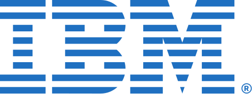

IBM
International Business Machines Corporation (IBM), originally known as the Computing-Tabulating-Recording Company (CTR), was founded in 1911 through a merger of four companies. It was renamed IBM in 1924. Throughout the 20th century, IBM transformed the computing industry. It developed punch-card machines, magnetic stripe cards, and led the development of modern barcodes. IBM introduced the first automated teller machines (ATMs) and revolutionized data processing with the launch of the System/360 mainframe in the 1960s. During the 1980s, IBM became known for its personal computers, helping to define the PC industry as we know it today. Its ThinkPad laptops, acquired later by Lenovo, were once industry leaders.
IBM also made strides in artificial intelligence, most notably with Deep Blue—the first machine to defeat a world chess champion—and later with Watson, which won the quiz show Jeopardy! in 2011. The company has consistently invested in research and development and has earned the highest number of U.S. patents every year for nearly three decades. With a shift towards cloud computing and AI in recent years, IBM acquired Red Hat in 2019, one of the largest software acquisitions in history. Its focus today lies in hybrid cloud infrastructure, enterprise AI, and quantum computing. IBM continues to influence the world through innovation, partnerships, and solutions designed to make businesses smarter, more secure, and resilient in an ever-changing world.
IBM's corporate affairs encompass a wide range of strategic operations that define its influence and longevity in the tech world. The company is headquartered in Armonk, New York, and operates in over 175 countries worldwide. Its business strategy emphasizes client-centric approaches, long-term partnerships, and leveraging advanced technologies. IBM has a board of directors and executive leadership that focuses on maintaining transparency, corporate governance, and social responsibility. The company promotes sustainability initiatives and regularly publishes environmental, social, and governance (ESG) reports. Furthermore, IBM is also known for its proactive involvement in tech regulation, digital rights, and ethical AI governance globally.
IBM offers a robust product portfolio tailored to enterprises. Key offerings include IBM Cloud, which supports hybrid multi-cloud environments; IBM Watson, an AI system designed for business use cases such as natural language processing, automation, and analytics; and IBM Z mainframe systems known for reliability and security. The company also provides data storage systems, Power Systems servers, middleware, and blockchain solutions. With its Red Hat acquisition, IBM now offers OpenShift-based containerization and Kubernetes platforms. IBM’s services enable digital transformation through consulting, infrastructure modernization, cybersecurity, and artificial intelligence integration.
IBM Research is one of the world's largest and most influential corporate research labs, with a legacy of major technological breakthroughs. IBM scientists have invented the hard disk drive, dynamic random-access memory (DRAM), and relational databases. In modern times, IBM Research focuses on quantum computing, AI ethics, cloud infrastructure, semiconductors, and climate science. IBM's labs across the globe contribute to open-source communities, patent leadership, and academic collaborations. It has 12 research labs worldwide, with pioneering work in quantum systems, neuromorphic chips, and sustainable AI models driving the future of tech.
IBM’s brand is recognized globally for innovation, trust, and enterprise-grade solutions. The iconic blue logo, designed by Paul Rand, symbolizes consistency and stability. IBM’s brand has evolved with time—from a hardware and services powerhouse to a cloud and AI leader. The company’s reputation is built on long-term customer trust, corporate responsibility, and cutting-edge R&D. IBM frequently ranks high in global brand valuation studies and is associated with business transformation, leadership in patents, and technological ethics.
IBM fosters an inclusive, ethical, and learning-driven culture. It emphasizes diversity, equity, and inclusion in its workforce policies. The company runs global initiatives to improve access to digital education and has committed to training millions in AI and cybersecurity by 2030. IBMers (IBM employees) value innovation, customer focus, and continuous learning. Programs like IBM SkillsBuild and P-TECH showcase IBM’s commitment to social impact and global upskilling. Remote work, sustainability, and employee wellness are also core to IBM’s evolving culture post-pandemic.
IBM’s leadership has played a pivotal role in shaping the tech world. From Thomas J. Watson Sr., who laid the foundation, to Arvind Krishna, the current CEO, each leader brought transformational vision. Watson Jr. steered IBM into computing; Lou Gerstner’s reforms revived IBM in the 1990s by shifting toward services; and Ginni Rometty led its cloud strategy. Krishna has doubled down on AI and hybrid cloud, positioning IBM for future relevance. IBM’s leadership values innovation, resilience, and long-term strategy.
Other related topics include Red Hat, OpenAI, Microsoft Azure, Amazon Web Services, Google Cloud Platform, Intel, Oracle, and companies shaping enterprise computing and artificial intelligence. Topics such as quantum computing, AI ethics, hybrid cloud, and edge computing are also closely tied to IBM’s ongoing work.
The nickname "Big Blue" is a reference to IBM’s traditional color scheme and consistent use of blue in branding, logos, and design. It represents trust, security, and stability. Many associate the term with IBM’s dominance in the mainframe and enterprise computing space, especially during the 1960s–1990s.
References include IBM’s official website (www.ibm.com), annual reports, Wikipedia, Forbes, Wired, Harvard Business Review, and IEEE articles. Key authors like Kevin Maney and Richard Tedlow have written extensively about IBM’s leadership and strategic moves over the years. IBM's patent archives and Watson Blog are also credible sources of recent innovation updates.
For further reading, books such as “Making the World Work Better,” “The Maverick and His Machine,” “Who Says Elephants Can’t Dance?” and “IBM Redux” provide in-depth insights. Harvard case studies and MIT Sloan research papers on IBM's transformation journey are also valuable. The official IBM Research blog offers technical insights into its latest innovations.
Visit: www.ibm.com | IBM Wikipedia